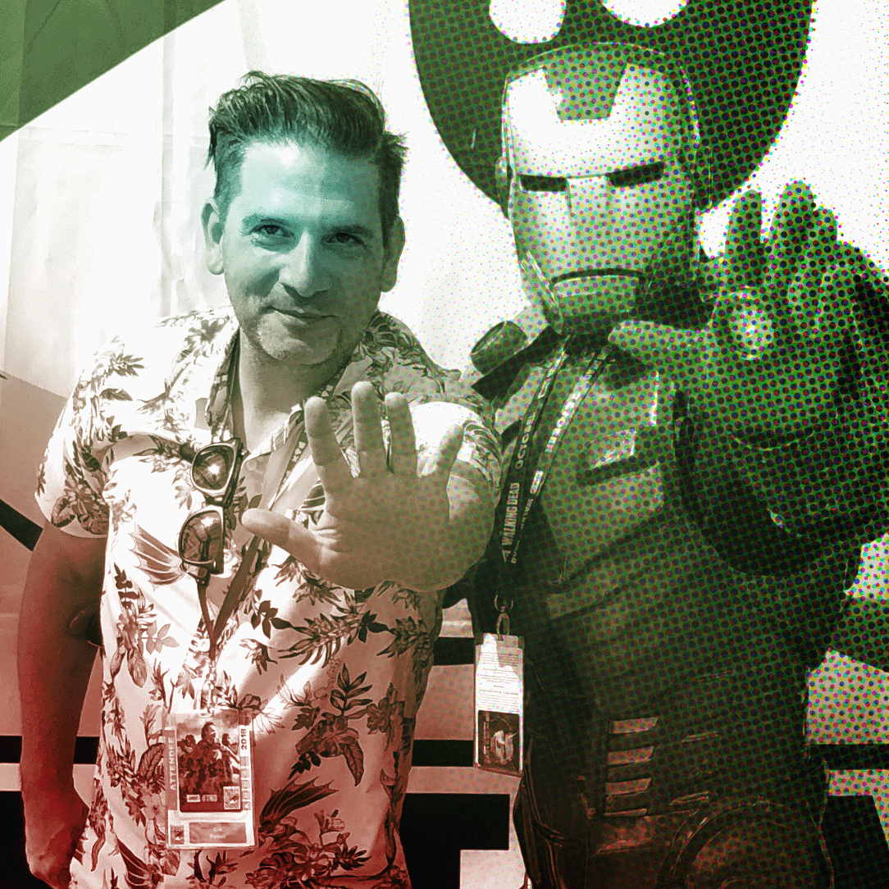

Designing calm in complex systems
Senior Product & UX leader shipping award-winning platforms across streaming, cloud, and SaaS. I build metadata-driven experiences, scalable design systems, and role-based workflows that help teams move faster with confidence. Designing Systems - not just screens.
Design systems expertise · Multi-platform UI/UX fluency · Client + brand experience
Building scalable systems and experiences across streaming, enterprise, and consumer platforms for global brands.
Product Design for the way you want to work
Role-based dashboards, consistent patterns, and actionable insights across surfaces.
Selected Work: 2024 Paris Olympics App
Delivering a dynamic, metadata-driven experience for live, replay, and highlight coverage


Recent Blog Posts
Post Title 1
Brief description of the first post.
Post Title 2
Brief description of the second post.
Post Title 3
Brief description of the third post.
Post Title 4
Brief description of the fourth post.
About
Hi, I’m Xris — a senior product & UX leader with 15+ years building large-scale, award-winning experiences across media and technology. I partner closely with engineering, data, and business leads to translate complex systems into simple, powerful workflows.
Focus areas include platform navigation, metadata pipelines, playback UX, and distribution tooling for web, mobile, and connected TV.

Skills
8
International Companies
33
Responsive Apps Shipped
1
Emmy Winning App
16
SaaS Platforms Designed
The 2024 Paris Olympics App By the Numbers
A snapshot of Chris Parsell’s impact across enterprise UX, design systems, and large-scale media experiences.
Households Reached
Cross-Platform Launches
Faster Content Discovery
Increase in Tune-Ins
Tech Stacks
Let’s Connect
Like what you see? I’m always happy to talk about platforms, patterns, and products that scale.
Get in Touch